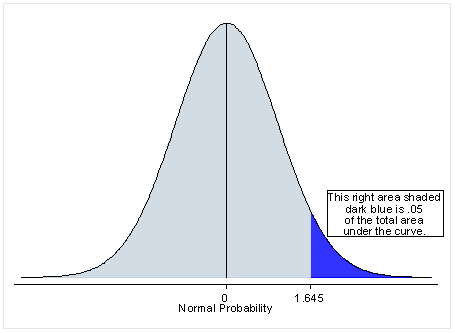

IQ_muestra <- c(101, 98, 116, 96, 129) # muestra
n <- 5 # número de observaciones
t95 <- qt(p = 0.975, df = n -1) # valor de Student para 4 grados de libertad al 5%
x <- mean(IQ_muestra) # media aritmética de la muestra
s <- sd(IQ_muestra) # desviación estándar de la muestra
ls <- x + (t95*s/(n-1)) # límite superior del IC95
li <- x - (t95*s/(n-1)) # límite inferior del IC95
Módulo 5: Introducción a la Estadística Inferencial con R
Mauricio Moreno, PhD
Generalidades
Uno de los objetivos de este curso es el evitar en la medida de lo posible el adentrarnos en teoría estadística. Entre los temas que dejaremos de lado están:
Teoría de la probabilidad básica
Ley de los números grandes
Distribución muestral (o de muestreo)
Teorema del límite central
Valores críticos de una prueba
Descripción a detalle de la distribución normal
Descripción a detalle de otras distribuciones
Para quién esté interesado en un recurso para ver estos temas a profundidad, recomiendo el libro de Danielle Navarro: Learning Statistics with R
Definiciones básicas
Muestras, poblaciones y muestreos
Muestra: Es un conjunto de observaciones que provienen de una población de interés. Idealmente, esta debería ser lo suficientemente grande para hacer inferencias de esa población.
Población: Es el conjunto de todas las posibles observaciones de las que tengamos interés en realizar inferencias. Es vital el definir adecuadamente sus características.
Muestreo: Es el proceso por el cual obtendremos nuestra muestra para un estudio. En estudios experimentales, el muestreo se entiende también como el proceso de aleatorización/randomización de unidades experimentales.
Muestreo simple sin reemplazo

Tomado de Learning Statistics with R
Muestreo simple con reemplazo
Tomado de Learning Statistics with R
Otros tipos de muestreo
Muestreo sistemático: consiste en tomar un determinado elemento de la población siguiendo un patrón. Por ejemplo, escoger los múltiplos de cuatro enumerados en una lista de posibles individuos de estudio (solía ser una práctica común en ensayos clínicos).
Muestreo a conveniencia: consiste en incluir en el estudio a todos los elementos disponibles de la población de interés. Esto sucede sobre todo con poblaciones escasas o de dificil acceso (ejemplo, realizar estudios en comunidades LGBTIQ+).
Muestreo estratificado: es una combinación del muestreo simple con los sujetos agrupados por alguna característica en común, por ejemplo sexo, edad, hábitat (suele ser usado en exit polls y conteos rápidos).
Parámetros poblacionales y estadísticos muestrales
Parámetros poblacionales: llamados también verdaderos. Corresponden al escenario en que todos los individuos de una población podrían ser medidos con respecto a una característica.
Estadísticos muestrales: son aproximaciones de los parámetros verdaderos que corresponden a mediciones de una muestra de la población.
La estadística gira alrededor de la inferencia sobre estadísticos muestrales, ya que en el práctica, los parámetros poblacionales son prácticamente imposibles de determinar.
Media aritmética
| Símbolo | ¿Qué es? | ¿Sabemos qué es? |
|---|---|---|
| \(\overline{X}\) | Media aritmética de la muestra | Calculada de los datos |
| \(\mu\) | Verdadera media aritmética de la población | Casi nunca es conocida |
| \(\hat{\mu}\) | Estimado de la media aritmética de la población | Sí, identica a \(\overline{X}\) |
\[ \overline{X} = \frac{1}{n}\sum^{n}_{i=1}\left(X_i\right) \]
Desviación estándar
| Símbolo | ¿Qué es? | ¿Sabemos qué es? |
|---|---|---|
| \(s\) | Desviación estándar de la muestra | Calculada de los datos |
| \(\sigma\) | Verdadera desviación estándar de la población | Casi nunca es conocida |
| \(\hat{\sigma}\) | Estimado de la deviación estándar de la población | Sí, pero no es igual a \(s\) |
\[ s = \sqrt{\frac{1}{n} \sum_{i=1}^n (X_i - \overline{X})^2} \]
\[ \sigma = \sqrt{\frac{1}{n-1} \sum_{i=1}^n (X_i - \overline{X})^2} \]
Varianza
| Símbolo | ¿Qué es? | ¿Sabemos qué es? |
|---|---|---|
| \(s^2\) | Varianza de la muestra | Calculada de los datos |
| \(\sigma^2\) | Verdadera varianza de la población | Casi nunca es conocida |
| \(\hat{\sigma}^2\) | Estimado de la varianza de la población | Sí, pero no es igual a \(s^2\) |
\[ s^2 = \frac{1}{n} \sum_{i=1}^n (X_i - \overline{X})^2 \]
\[ \sigma^2 = \frac{1}{n-1} \sum_{i=1}^n (X_i - \overline{X})^2 \]
Intervalos de confianza
Los estimados de las verdaderas \(\mu\) y \(\sigma\) (\(\hat{\mu}\) y \(\hat{\sigma}\)) provienen de distribuciones de muestreo, y como tales, inherentemente poseen cierto grado de incertidumbre.
Los intervalos de confianza son medidas que nos permiten tener una idea de esa incertidumbre.
En el estudio de la distribución normal estándar tenemos el conocimiento que existe un 95% de chances que una cantidad normalmente distribuida colectada al azar, estará distante de la media aritmética entre \(\pm\) 1.96 desviaciones estándar.
\[ \overline{X} - \left(1.96\times\frac{\sigma}{\sqrt{n}}\right) \leq \mu \leq \overline{X} + \left(1.96\times\frac{\sigma}{\sqrt{n}}\right) \]
- Y se interpreta como: con un 95% de confianza, podemos esperar que la media aritmética verdadera de la población de interés se encuentra contenida entre…
\[ \text{IC}_{95}=\overline{X} \pm \left(1.96\times\frac{\sigma}{\sqrt{n}}\right) \]
Intervalos de confianza
Sin embargo, como mencionamos \(\sigma\) es casi nunca conocido, y es necesario hacer una corrección a la fórmula anterior. La distribución normal trabaja bien baja la presunción de un número grande de observaciones.
En su lugar, en 1908 el estadístico Gosset parametrizó una distribución para muestras pequeñas que asemeja a la normal. Con el tiempo, esta distribución adoptó el nombre de Student.
Y es precisamente que la fórmula anterior es corregida con la distribución de Student y así poder calcular intervalos de confianza para muestras pequeñas usando \(s\) en lugar de \(\sigma\):
\[ \text{IC}_{95}=\overline{X} \pm \left(t_{n-1,\alpha/2}\times\frac{s}{\sqrt{n}}\right) \]
Donde el valor \(t_{n-1,\alpha/2}\) refiere a:
\(n-1\): los grados de libertad, igual al número de observaciones \(n\) de la muestra, menos 1
\(\alpha\): es el nivel de significancia (probabilidad de obtener un resultado erróneo por azar).
Estos valores en el pasado se encontraban tabulados en libros de texto, hoy contamos con R!
Ejemplo de parámetros poblacionales y estadísticos muestrales
Supongamos que el IQ de toda una población puede estar caracterizado por una media aritmética, \(\mu\), igual a 100, con una desviación estándar, \(\sigma\), igual a 15.
Si tomo una muestra de 100 individuos de dicha población, podría tener una media aritmética de esta muestra, \(\overline{X}\), igual a 101.4 y una desviación estándar de la muestra, \(s\), igual a 13.7.
Así \(\overline{X}\) y \(s\) son aproximaciones a los valores verdareros de \(\mu\) y \(\sigma\) de esa población.
Ejemplo de parámetros poblacionales y estadísticos muestrales
- Supongamos que en lugar de tener acceso al IQ de 100 personas, medimos al azar el IQ de sólamente 5 personas y deseamos calcular el \(\text{IC}_{95}\)
Intervalos de confianza
- Supongamos que en lugar de tener acceso al IQ de 100 personas, medimos al azar el IQ de sólamente 5 personas y deseamos calcular el \(\text{IC}_{95}\)
IQ_muestra <- c(101, 98, 116, 96, 129) # muestra
n <- 5 # número de observaciones
t95 <- qt(p = 0.975, df = n -1) # valor de Student para 4 grados de libertad al 5%
x <- mean(IQ_muestra) # media aritmética de la muestra
s <- sd(IQ_muestra) # desviación estándar de la muestra
ls <- x + (t95*s/(n-1)) # límite superior del IC95
li <- x - (t95*s/(n-1)) # límite inferior del IC95
print(paste0("Con un 95% de confianza podemos esperar que la verdadera media aritmética de IQ de esta población se encuentre entre [",round(li,0),", ",round(ls,0),"]"))[1] "Con un 95% de confianza podemos esperar que la verdadera media aritmética de IQ de esta población se encuentre entre [98, 118]"Hipótesis de investigación vs. hipótesis estadísticas
Una hipótesis de investigación gira alrededor del desarrollar una conclusión científica acerca de un tema de interés del investigador. Ejemplos: el fumar causa cáncer, las vacunas causan/previenen enfermedades.
- Es decir, pueden tener una naturaleza subjetiva, que expresan la pregunta del investigador de una manera general sin mayor descripción del ¿cómo? voy a probar o descartarla, ni ¿en qué extensión?.
Hipótesis estadísticas, por el contrario, deben ser matemáticamente precisas y basadas en las características de los datos que recolectemos con el fin de probar o descartar la hipótesis de investigación.
Cómo es de esperar, el probar o descartar una hipótesis estadística será únicamente válida para la población sobre la cual una muestra fue tomada.
Es ahí donde radica la importancia en definir la población sujeto de estudio de manera planificada con el objetivo de que cumpla tantos detalles sean necesarios de la hipótesis de investigación. Ejemplo, el modelo animal más usado es el ratón. Si bien es cierto constituye uno de los primeros pasos en el desarrollo de muchas investigaciones, los hallazgos en ratones NO pueden ser inmediatamente atribuibles a suceder en seres humanos.
Hipótesis nula y alternativa
La formulación de hipótesis estadísticas puede reducirse a establer preguntas de investigación en forma de las hipótesis nula y alternativa.
Supongamos que tenemos dos grupos experimentales para probar la eficiencia de un nuevo procedimiento quirúrgico. Un grupo de pacientes será sometido a la intervención tradicional (control), y el otro grupo al nuevo procedimiento (experimental).
La hipótesis nula (\(H_0\)) establece que: no existe diferencia entre el grupo control y el grupo experimental,
Mientras que la hipótesis alternativa (\(H_a\)) establece que: sí existe differencia entre ambos.
\[\begin{align}
H_0& : \mu_c = \mu_e& H_0& : \mu_c- \mu_e =0 \\
H_a& : \mu_c \neq \mu_e& H_a& : \mu_c- \mu_e \neq 0
\end{align}\]
Tipos de errores
- Al llevar a cabo pruebas de hipótesis pueden ocurrir errores
\[\begin{array}{|c||c||c|}
\hline
& \text{Acepta }H_{0} & \text{Rechaza }H_{0} \\
\hline
H_{0}\text{ es verdadera} & \text{Desición correcta} & \text{Error tipo I} \\
H_{0}\text{ es falsa} & \text{Error tipo II} & \text{Desición correcta} \\
\hline
\end{array}\]
- ¿De qué depende que aceptemos correctamente o no la hipótesis nula?
Las pruebas estadísticas dependen de la cantidad de variación y la diferencia entre tratamientos a detectar (tamaño del efecto). La solución: aumentar el número de observaciones
Poder de una prueba estadística
El poder de una prueba estadística es la probabilidad de rechazar la hipótesis nula cuando esta es de hecho falsa.
Se puede derivar de la tabla anterior
\[\begin{array}{|c||c||c|}
\hline
& \text{Acepta }H_{0} & \text{Rechaza }H_{0} \\
\hline
H_{0}\text{ es verdadera} & 1-\alpha\text{ (Prob. decisión correcta)} & \alpha\text{ (Taza Error tipo I)} \\
H_{0}\text{ es falsa} & \beta\text{ (Taza Error tipo II)} & 1-\beta\text{ (Poder)} \\
\hline
\end{array}\]
En la práctica, existen fórmulas cerradas para la determinación del número mínimo de observaciones para alcanzar un poder adecuado (\(\ge\) 80%)
A este procedimiento se le conoce como análisis de poder o determinación del tamaño de la muestra y del que hablaremos en más detalle más adelante.
Tamaño del efecto
El tamaño del efecto (\(\theta\)) es un valor que por lo general es determinado por el investigador y que puede ser la diferencia de interés a detectar en una prueba estadística.
Por ejemplo, supongamos que tenemos un grupo de ratones que poseen una media de 110 mg/dL de glucosa en sangre y podrían ser parte de un linaje para ser usado como modelo para hiperglucemia. Si el valor normal de glucosa en ratones es de 100 mg/dL, el investigador estaría interesado en saber cuál es el número de ratones necesarios para con un 80% de poder, determinar si el tamaño de efecto \(\theta = 10\) es estadísticamente distinto de 0.
Las hipótesis de esta prueba se vería así
\[\begin{align}
H_0& : \mu_c- \mu_r = \theta \\
H_a& : \mu_c- \mu_r \neq \theta
\end{align}\]
- Esta hipótesis corresponde a la prueba estadística más común: dos colas
Pruebas de dos colas
\[\begin{align} H_0& : \mu_c- \mu_r = \theta \\ H_a& : \mu_c- \mu_r \neq \theta \end{align}\]
Imagen tomada de UCLA: Advanced Research Computing
Pruebas de una cola
\[\begin{align} H_0& : \mu_c- \mu_r \ge \theta \\ H_a& : \mu_c- \mu_r < \theta \end{align}\]
Imagen tomada de UCLA: Advanced Research Computing
Pruebas de una cola
\[\begin{align} H_0& : \mu_c- \mu_r \le \theta \\ H_a& : \mu_c- \mu_r > \theta \end{align}\] Imagen tomada de UCLA: Advanced Research Computing
El valor p
Pero ¿cómo sabemos si una hipótesis es aceptada o rechazada?
El valor p, describe que tan probable sería observar resultados de la prueba asumiendo que la hipótesis nula no hubiese sido rechazada. Por ello, a menores valores p, mayor la diferencia estadística con respecto a la hipótesis alternativa.
El valor p también depende de que tan “estricta” queramos sea la prueba, y esto se define con el grado de significancia (usualmente igual a 5%, y a 1%)
Imagen tomada de Towards DataScience
Antes de continuar
Imagen tomada de aquí
Antes de continuar
El umbral de 0.05 es una convención arbitraria creada por Fischer en los inicios de la estadística moderna.
Lastimosamente, se ha generalizado la idea de que por más mínima sea la diferencia con respecto a 0.05, esta representa la diferencia entre publicar o no (en el campo académico), entre lanzar o no un nuevo fármaco/producto al mercado (en la industria).
En 2014, debido a un fallo de la corte suprema de justicia de los Estados Unidos que le dio la potestad a los inversionistas de farmaceúticas a demandarlas por fallar en reportar efectos secundarios de sus productos a pesar de haber sido hallados estadísticamente no significativos, la Asociación Americana de Estadística (ASA) se vio en la necesidad de definir más exhaustivamente el concepto del valor p.
Entre las recomendaciones de la ASA, se enfatizó el dar mayor prioridad a la estimación de otros estadísticos complementarios al valor p, tales como intervalos de confianza u otros provenientes de la estadística Bayesiana (intervalos de credibilidad, factores de Bayes).
Esta última (estadística Bayesiana), ofrece una interpretación más natural al referirnos a los resultados en términos de probabilidades y no en números arbirtrarios como el valor p.
En resumen, una investigación no es inútil si el valor p sobrepasa o está por debajo de 0.05 por cantidades pequeñas.
Antes de continuar
En su lugar, en escenarios en que el valor p está alejado por una décima o varias centésimas de 0.05, los resultados deberían interpretarse como indeterminados para generalizar sobre la población objeto de estudio y específicos a las condiciones experimentales (análisis estadísticos, instrumentos de medición, etc) bajo las cuales fueron tomadas y modeladas las mediciones.
En el contexto de los modelos estadísticos que veremos más adelante, esto ha derivado en un “temor” del investigador cuando los resultados no pasan los chequeos de los supuestos sobre los que estos modelos se cimentan. Sobre todo cuando el valor p dista de 0.05 por ínfimas cantidades.
Esto puede llevar a malas prácticas científicas tales como: no reportar el resultado de los chequeos, blindar los datos, escoger “outliers” y removerlos y en el peor de los casos, manipular los datos para tratar de acomodar nuestros datos a estos chequeos.
Todo lo que he mencionado, no solamente constituyen casos de mala conducta científica, sino lo que hoy en día se le conoce como p hacking (que se puede resumir a torturar los datos hasta que nos confiesen una verdad agradable a nuestros propósitos).
Pruebas estadísticas paramétricas
Pruebas t
Las pruebas t son usadas para encontrar la diferencia entre dos medias aritméticas.
La \(H_0\) en estas pruebas es que las medias aritméticas son las mismas.
Se rechaza la \(H_0\) cuando el valor p resultante es \(<\) 0.05
Existen tres tipos de pruebas t
Pruebas t de una muestra
Pruebas t de muestras independientes
Pruebas t de muestras emparejadas
Estas pruebas fueron desarrolladas bajo la suposición de la normalidad y de homogeneidad de las varianzas.
De acuerdo al teorema del límite central, muestras grandes casi aseguran la normalidad.
Cuando el número de observaciones en una muestra es pequeño, es recomendable llevar a cabo un test de normalidad para decidir si es posible una prueba t o una de sus alternativas.
Normalidad de una muestra
Antes de llevar a cabo las pruebas t, hemos mencionado sus supuestos. Por ello, es aconsejable el siempre realizar estas pruebas antes de usarlas.
Existen dos tipos de pruebas para establecer si una muestra es normalmente distribuida o no
Indirectamente: gráfico Q-Q
Prueba formal de normalidad (ejemplo: Shapiro-Wilk)
En el caso del ANOVA, es importante enfatizar que estas pruebas no necesariamente tienen que hacerse antes de la prueba, como ya veremos más adelante.
Gráfico Q-Q
El gráfico Q-Q es una prueba visual indirecta de la normalidad.
Consiste en crear un gráfico de dispersión entre los valores observados de una muestra vs. los valores que deberían estos tener si siguieran una distribución normal.
Mientras en el gráfico de dispersión los puntos más se distribuyan a lo largo de una diagonal, más cercanos están los datos de la muestra a seguir un distribución normal.
Su desventaja es que es muy subjetivo, y a menudo requiere una prueba formal para poder confirmarlo.
Gráfico Q-Q
Gráfico Q-Q

Prueba de normalidad Shapiro-Wilk
La \(H_0\) de esta prueba (y del resto de pruebas formales de normalidad) es que un set de \(n\) observaciones es normalmente distribuido.
Otro conocido método es Kolmogorov-Smirnov. Sin embargo, Shapiro-Wilk es más apropiado para cuando el número de muestras es menor a 50.
Para ilustrar su uso, chequeemos la normalidad de los datos que simulamos anteriormente
Prueba de homogeneidad de las varianzas
En el caso de comparaciones entre las medias de dos grupos, la homogeneidad de varianzas puede chequearse usando la prueba F.
La prueba t de una muestra no requiere chequear este supuesto.
Para ilustrar su uso, creemos otro vector con datos simulados. En este caso, un igual número de observaciones con la misma desviación estándar pero diferente media:
F test to compare two variances
data: x and y
F = 1, num df = 29, denom df = 29, p-value = 1
alternative hypothesis: true ratio of variances is not equal to 1
95 percent confidence interval:
0.4759648 2.1009958
sample estimates:
ratio of variances
1 Supuestos en la práctica
Homogeneidad de las varianzas
F test to compare two variances
data: crime$y1983 and crime$y1993
F = 0.49163, num df = 50, denom df = 50, p-value = 0.01342
alternative hypothesis: true ratio of variances is not equal to 1
95 percent confidence interval:
0.2806163 0.8613069
sample estimates:
ratio of variances
0.4916266 
Transformación de variables
A menudo nos encontraremos con conjuntos de observaciones que no cumplen uno o ninguno de los supuestos.
Antes de considerar pruebas no paramétricas, podemos intentar transformaciones de variables para regresar al mundo de las pruebas paramétricas. Las transformaciones más usadas son:
La raíz cuadrada (si los datos no contienen números negativos)
Elevar al cuadrado
Logaritmo (si los datos no contienen números negativos)
Transformación de variables
Existe un método más sofisticado para “normalizar” una muestra. La transformación de Box-Cox.
Cuando se trabaja con muestras transformadas, el objetivo es poder revertir la transformación a las unidades reales para así poder hacer conclusiones sobre las inferencias estadísticas.
En otras palabras, una misma transformación debe aplicarse a todos los grupos a ser comparados. NO tiene ningún sentido tratar de realizar inferencias entre grupos donde se hayan usado distintas transformaciones para normalizarlos.
Si el número de observaciones es muy reducido, usualmente no hay transformación que funcione y se recomienda usar directamente pruebas no paramétricas.
Transformación de variables
Raíz cuadrada
Logaritmo
Homogeneidad de las varianzas con transformación logarítmica
F test to compare two variances
data: log(crime$y1983) and log(crime$y1993)
F = 0.84048, num df = 50, denom df = 50, p-value = 0.5412
alternative hypothesis: true ratio of variances is not equal to 1
95 percent confidence interval:
0.4797393 1.4724831
sample estimates:
ratio of variances
0.8404808 Prueba t de una muestra
Es usada para comparar la media aritmética de una muestra con un valor conocido (un estándar por ejemplo).
Por lo general el valor al que se va a comparar proviene de referencias bibliográficas, pre-experimentos o supociones fundamentadas.
En este caso, el supuesto que debe cumplirse es el de la normalidad de los datos
Regresando al ejemplo de los ratones, determinemos si la media de la siguiente muestra es mayor al límite superior de glucosa de ratones saludables (100 mg/dL).
Prueba t de una muestra
Prueba t de una muestra
glc_rat <- c(108.7, 93.7, 52.7, 79.0, 74.7, 131.9, 99.5, 63.3, 98.6, 92.7)
ratest <- t.test(glc_rat,
mu = 100,
alternative = "greater")
ratest
One Sample t-test
data: glc_rat
t = -1.4485, df = 9, p-value = 0.9093
alternative hypothesis: true mean is greater than 100
95 percent confidence interval:
76.16687 Inf
sample estimates:
mean of x
89.48 Prueba t de muestras independientes
Es usada para comparar las medias aritméticas de dos grupos independientes.
Por ejemplo, si deseas comparar las medias aritméticas de individuos agrupados por sexo.
Para ilustrar esta prueba, vamos a hacer uso de la tabla de datos de
genderweightdel paquete{datarium}.- Veamos si existe una diferencia significativa en la media del peso entre hombres y mujeres
Prueba t de muestras independientes
Chequeamos normalidad: Group M
Chequeamos la homogeneidad de las varianzas
F test to compare two variances
data: genderweight$weight by genderweight$group
F = 0.21692, num df = 19, denom df = 19, p-value = 0.001648
alternative hypothesis: true ratio of variances is not equal to 1
95 percent confidence interval:
0.08585766 0.54802553
sample estimates:
ratio of variances
0.2169152 - ¡La homogeneidad de las varianzas no se cumple! 😱
Prueba t de muestras independientes
¿Debemos transformar? No necesariamente
El no cumplir con el supuesto de la homogeneidad de varianzas no es un gran problema gracias a varias correcciones.
La función base de R
t.testcuenta con el argumentovar.equal = Fcomo default.Bajo este argumento, no se asumen varianzas iguales entre los grupos y en su lugar R lleva a cabo la aproximación de Welch para lidiar con este problema.
Welch Two Sample t-test
data: genderweight$weight by genderweight$group
t = -20.791, df = 26.872, p-value < 2.2e-16
alternative hypothesis: true difference in means between group F and group M is not equal to 0
95 percent confidence interval:
-24.53135 -20.12353
sample estimates:
mean in group F mean in group M
63.49867 85.82612 Prueba t para muestras emparejadas
Es usada para comparar las medias de dos grupos que guardan una relación.
Esto solo ocurre cuando las medidas se han realizado en las mismas unidades experimentales. Ejemplos: individuos al inicio y al final de un tratamiento, muestras en una misma locación geográfica.
Para esta prueba, vamos a usar la tabla de datos
crimedel paquete{UsingR}- Veamos si existe una diferencia en las tasas de crimen (# de reportes/100000 habitantes) en 50 estados de los Estados unidos entre 1983 y 1993
Prueba t para muestras emparejadas
Prueba t para muestras emparejadas
Paired t-test
data: log(crime$y1983) and log(crime$y1993)
t = -10.027, df = 50, p-value = 1.469e-13
alternative hypothesis: true mean difference is not equal to 0
95 percent confidence interval:
-0.3628437 -0.2417349
sample estimates:
mean difference
-0.3022893 [1] 362.8298[1] 490.8915Pruebas estadísticas no paramétricas
Pruebas de Wilcoxon para datos no normales
Las pruebas de Wilcoxon usan la mediana como criterio para evaluar la \(H_0\).
Lastimosamente, estas pruebas son usualmente menos poderosas (mayor tasa de errores tipo II).
Tiene dos formas:
Pruebas para una muestra (análoga a la prueba t para una muestra)
Pruebas para dos muestras (análoga a las pruebas t para dos muestras independientes y emparejadas)
Prueba de Wilcoxon para una muestra
Prof. Danielle Navarro midió el nivel de felicidad de sus estudiantes antes y después de su clase de Estadística. Ella estaba interesada en saber si el tomar una clase de Estadística tiene algún efecto en la felicidad de sus estudiantes. Los datos que obtuvo no están normalmente distribuidos. Por ello, se vio en la necesidad de llevar a cabo una prueba de Wilcoxon.
En este caso, la \(H_0\), es que la diferencia de la mediana de la felicidad de sus estudiantes antes y después de la clase debería ser igual a cero para concluir que no existe tal efecto.
Prueba de Wilcoxon para una muestra
# Primero recreo la tabla de Prof. Navarro
felicidad <- data.frame(before = c(30,43,21,24,23,40,29,56,38,16),
after = c(6,29,11,31,17,2,31,21,8,21))
felicidad$change <- felicidad$after - felicidad$before
muestra_wilcox <- wilcox.test(felicidad$change, mu = 0)
muestra_wilcox
Wilcoxon signed rank exact test
data: felicidad$change
V = 7, p-value = 0.03711
alternative hypothesis: true location is not equal to 0Prueba de Wilcoxon para dos muestras
Regresando al ejemplo de la tabla de datos
genderweight, supongamos que estos no están normalmente distribuidos.Usaremos la prueba de Wilcoxon para muestras independientes para ver si existe diferencia entre los pesos de hombres y mujeres.
{report}
El redactar resultados estadísticos puede resultar en una tarea compleja.
Afortunadamente contamos con la ayuda de
{report}, parte del multiverso{easystats}que nos puede dar guías para ello.
Effect sizes were labelled following Funder's (2019) recommendations.
The Wilcoxon rank sum exact test testing the difference in ranks between
genderweight$weight and genderweight$group suggests that the effect is
negative, statistically significant, and very large (W = 0.00, p < .001; r
(rank biserial) = -1.00, 95% CI [-1.00, -1.00])Effect sizes were labelled following Cohen's (1988) recommendations.
The Paired t-test testing the difference between log(crime$y1983) and
log(crime$y1993) (mean difference = -0.30) suggests that the effect is
negative, statistically significant, and large (difference = -0.30, 95% CI
[-0.36, -0.24], t(50) = -10.03, p < .001; Cohen's d = -1.40, 95% CI [-1.79,
-1.01])Análisis de Varianza (ANOVA)
Introducción
Hasta el momento nos hemos enfocado a los casos donde comparamos las medias entre dos grupos.
Pero es más común el evaluar distintos tratamientos al mismo tiempo.
Para ello, contamos con el ANOVA, desarrollado por el estadístico Ronald Fisher a inicios del siglo 20, y que sin duda es el método estadístico más usado hoy en día.
El objetivo de un ANOVA es el de determinar la existencia de diferencias entre las medias aritméticas de las muestras representativas de \(n\) poblaciones (o en términos más precisos, tratamientos).
Supuestos del ANOVA
Independencia de los datos: correcta randomización en el diseño del experimento.
Homogeneidad de las varianzas: la varianza entre los tratamientos es la misma.
Normalidad: pero, ¿de qué exactamente?
Cómo vimos antes, la normalidad es un requisito para conducir pruebas t, y lo es también para el ANOVA.
Muchos libros de texto y otros recursos, mencionan que los datos de cada tratamiento deben ser normalmente distribuidos para llevar a cabo un ANOVA. Esto es cierto e impráctico a la vez.
Es común el sugerir el llevar a cabo una prueba de normalidad antes de un ANOVA, pero debemos considerar que:
Cada tratamiento tiene su propia media, en caso de medias muy distantes entre sí, la prueba puede fallar.
En su lugar, podrías correr una prueba por cada tratamiento. Esto solo funciona con un considerable número de observaciones/tratamiento.
Supuestos del ANOVA
Esto nos puede llevar a soluciones erróneas como transformar datos, borrar outliers o utilizar pruebas no paramétricas innecesariamente.
Entonces, ¿normalidad de qué?
De los residuos estandarizados!… ¿Qué es un residual?
Un residual es la diferencia entre una observación y su predicción
Un residual estandarizado resulta de la división del residual para la raíz cuadrada de la predicción
La distribución muestral de los residuos estandarizados tiene media 0 y desviación estándar 1
Pero, ¿por qué la confusión? Solo cuando el número de observaciones es lo suficientemente grande, se tiene la certeza que los residuos serán normalmente distribuidos.
En resumen, es mejor chequear la normalidad después que realizamos el ANOVA.
ANOVA de una vía
ANOVA de una vía se refiere cuando tenemos más de dos tratamientos que están definidos por un solo factor a la vez.
Para esta sección usaremos el dataset de moscas de la fruta de la librería
{Stat2Data}:
Estos datos corresponden a un estudio realizado por Partridge y Farquhar reportados por Hanley y Shapiro acerca del comportamiento sexual de moscas de la fruta.
La pregunta de investigación consistió en determinar si un incremento en la actividad sexual de moscas de sexo masculino reduce su esperanza de vida.
El experimento consistió de 125 moscas de sexo masculino que fueron asignadas al azar a los siguientes grupos:
8 vírgenes: un macho con 8 hembras vírgenes
1 virgen: un macho con una hembra virgen
8 embarazadas: un macho con 8 hembras embarazadas
1 embarazada: un macho con una hembra embarazada
ninguna: un macho solo
ANOVA de una vía
ANOVA de una vía en R
Existen dos formas de llevar a cabo ANOVA en R:
Crear un modelo lineal con la función
lmy luego el ANOVA con la funciónanovasobre el objeto producto delm.Aplicar directamente la función
aovsobre nuestros datos.
Ambas funciones (
lmyaov) tienen la misma sintaxis. La primera opción es la más usada.Adicionalmente, el paquete
carofrece la funciónAnova. El resultado de ambas es prácticamente el mismo para la mayoría de modelos. La ventaja de esta última yace en queAnovapuede realizar cálculos de los valores críticos usando sumas de cuadrados de tipo I, II y III.
ANOVA de una vía en R
Anova Table (Type II tests)
Response: Longevity
Sum Sq Df F value Pr(>F)
Treatment 11939 4 13.612 3.516e-09 ***
Residuals 26314 120
---
Signif. codes: 0 '***' 0.001 '**' 0.01 '*' 0.05 '.' 0.1 ' ' 1 Df Sum Sq Mean Sq F value Pr(>F)
Treatment 4 11939 2984.8 13.61 3.52e-09 ***
Residuals 120 26314 219.3
---
Signif. codes: 0 '***' 0.001 '**' 0.01 '*' 0.05 '.' 0.1 ' ' 1ANOVA de una vía en R
The ANOVA suggests that:
- The main effect of Treatment is statistically significant and large (F(4,
120) = 13.61, p < .001; Eta2 = 0.31, 95% CI [0.19, 1.00])
Effect sizes were labelled following Field's (2013) recommendations.The ANOVA (formula: Longevity ~ Treatment) suggests that:
- The main effect of Treatment is statistically significant and large (F(4,
120) = 13.61, p < .001; Eta2 = 0.31, 95% CI [0.19, 1.00])
Effect sizes were labelled following Field's (2013) recommendations.ANOVA de una vía en R
Diagnósticos del ANOVA
Antes de conducir pruebas formales para los supuestos del ANOVA, es preciso darle un vistazo a diagnósticos visuales que podemos obtener del mismo.
El ANOVA es un caso de regresión lineal (con predictores categóricos), por lo que en esta sección nos centraremos en la interpretación de estos diagnósticos desde la perspectiva del ANOVA.
En el apartado de regresión lineal volveremos a profundizar en las interpretaciones de los mismos para ese caso determinado.
Para acceder a estos diagnósticos, basta usar la función
plotsobre el objeto donde guardamos los resultados del modelolm1.
Diagnósticos del ANOVA
Diagnósticos del ANOVA
Diagnósticos del ANOVA
Residuos vs. Valores ajustados
En este plot podemos evidenciar departuras del supuesto de la homocedasticidad. Idealmente, la línea roja que se muestra debería ir a lo largo de la horizontal en la coordenada cero del eje y (sobre la línea entrecortada).
Diagnósticos del ANOVA

Gráfico Q-Q
A diferencia del gráfico Q-Q que vimos para las pruebas t, en el eje y de este mismo gráfico para el ANOVA (y regresión lineal) se representan los residuos estandarizados. La interpretación es la misma: idealmente los puntos deberían ir a lo largo de la diagonal. Cuando no es así, evidencia una violación del supuesto de la normalidad.
Diagnósticos del ANOVA
Raíz cuadrada de los residuos estandarizados vs. Valores ajustados
Similar al primer diagnóstico, en el caso del ANOVA, nos da una idea de posibles departuras de la homogeneidad de las varianzas. La línea roja idealmente debería ser completamente horizontal.
Diagnósticos del ANOVA
Residuos vs. Apalancamiento
Aquellos puntos que estén etiquetados con números son mostrados como posibles outliers bajo dos criterios:
Están por fuera de los límites de la regla del rango intercuartílico (IQR), y
Marcados como outliers con influencia de apalancamiento mediante la prueba de Cook (distancia de Cook).
El segundo criterio es un argumento sólido para remover outliers.
Pruebas formales de los supuestos del ANOVA
Normalidad de los residuos
Pruebas formales de los supuestos del ANOVA
Homogeneidad de las varianzas con {car}
Levene's Test for Homogeneity of Variance (center = median)
Df F value Pr(>F)
group 4 0.4916 0.7419
120 Comparaciones múltiples
Las comparaciones múltiples más usadas son:
HSD Tukey (Honestly significant difference): lleva a cabo todos los pares de comparaciones posibles entre los niveles de un factor.
Prueba de Dunnett: Compara los niveles únicamente con respecto al nivel control dentro del factor.
Son conocidas también como pruebas post-hoc.
En R, una manera de realizar comparaciones múltiples es mediante los paquetes
{emmeans}y{multcomp}(este último depende de{multcompView}, así que no olvides instalarlo también).
HSD Tukey
HSD Tukey
Calculamos las medias marginales a partir del modelo
Treatment emmean SE df lower.CL upper.CL
1 pregnant 64.8 2.96 120 58.9 70.7
1 virgin 56.8 2.96 120 50.9 62.6
8 pregnant 63.4 2.96 120 57.5 69.2
8 virgin 38.7 2.96 120 32.9 44.6
none 63.6 2.96 120 57.7 69.4
Confidence level used: 0.95 - Ahora podemos calcular las comparaciones por pares de HSD Tukey
contrast estimate SE df t.ratio p.value
1 pregnant - 1 virgin 8.04 4.19 120 1.920 0.3127
1 pregnant - 8 pregnant 1.44 4.19 120 0.344 0.9970
1 pregnant - 8 virgin 26.08 4.19 120 6.227 <.0001
1 pregnant - none 1.24 4.19 120 0.296 0.9983
1 virgin - 8 pregnant -6.60 4.19 120 -1.576 0.5158
1 virgin - 8 virgin 18.04 4.19 120 4.307 0.0003
1 virgin - none -6.80 4.19 120 -1.624 0.4854
8 pregnant - 8 virgin 24.64 4.19 120 5.883 <.0001
8 pregnant - none -0.20 4.19 120 -0.048 1.0000
8 virgin - none -24.84 4.19 120 -5.931 <.0001
P value adjustment: tukey method for comparing a family of 5 estimates Prueba de Dunnett
- Para Dunnett, es importante el establecer el grupo control
contrast estimate SE df t.ratio p.value
1 pregnant - none 1.24 4.19 120 0.296 0.9800
1 virgin - none -6.80 4.19 120 -1.624 0.3079
8 pregnant - none -0.20 4.19 120 -0.048 0.9997
8 virgin - none -24.84 4.19 120 -5.931 <.0001
P value adjustment: dunnettx method for 4 tests Agrupación de comparaciones múltiples
- Finalmente, otra tabla de resumen de las comparaciones múltiples es la de agrupar las medias aritméticas marginales con números (o letras) de acuerdo a si estas son estadísticamente distintas o no entre si. Para ello podemos usar el paquete
multcomp:
# multcomp necesita un paquete extra llamada multcompView
# No olvides instalar multcompView antes de correr este código
library(multcomp)
medias_marginales <- cld(ph1)
medias_marginales Treatment emmean SE df lower.CL upper.CL .group
8 virgin 38.7 2.96 120 32.9 44.6 1
1 virgin 56.8 2.96 120 50.9 62.6 2
8 pregnant 63.4 2.96 120 57.5 69.2 2
none 63.6 2.96 120 57.7 69.4 2
1 pregnant 64.8 2.96 120 58.9 70.7 2
Confidence level used: 0.95
P value adjustment: tukey method for comparing a family of 5 estimates
significance level used: alpha = 0.05
NOTE: If two or more means share the same grouping symbol,
then we cannot show them to be different.
But we also did not show them to be the same. Antes de continuar
- En este punto, antes de continuar hagamos uso nuevamente del paquete
flextablepara exportar nuestras tablas a Word.
library(flextable)
tabla_anova <- anova1 |>
report_table() |>
format_table() |>
flextable()
tabla_tukey <- colformat_double(flextable(as.data.frame(tukey_comp)),
digits = 3, j = c(2, 3, 6)) |>
autofit()
tabla_dunnett <- colformat_double(flextable(as.data.frame(dunnett_comp)),
digits = 3, j = c(2, 3, 6)) |>
autofit()
tabla_marginal <- colformat_double(flextable(medias_marginales),
digits = 3, j = c(2, 3, 5, 6)) |>
autofit()Parameter | Sum_Squares | df | Mean_Square | F | p | Eta2 | Eta2 95% CI |
|---|---|---|---|---|---|---|---|
Treatment | 11939.28 | 4 | 2984.82 | 13.61 | < .001 | 0.31 | [0.19, 1.00] |
Residuals | 26313.52 | 120 | 219.28 |
|
Antes de continuar
contrast | estimate | SE | df | t.ratio | p.value |
|---|---|---|---|---|---|
1 pregnant - 1 virgin | 8.040 | 4.188 | 120 | 1.9196065 | 0.313 |
1 pregnant - 8 pregnant | 1.440 | 4.188 | 120 | 0.3438101 | 0.997 |
1 pregnant - 8 virgin | 26.080 | 4.188 | 120 | 6.2267832 | 0.000 |
1 pregnant - none | 1.240 | 4.188 | 120 | 0.2960587 | 0.998 |
1 virgin - 8 pregnant | -6.600 | 4.188 | 120 | -1.5757964 | 0.516 |
1 virgin - 8 virgin | 18.040 | 4.188 | 120 | 4.3071767 | 0.000 |
1 virgin - none | -6.800 | 4.188 | 120 | -1.6235478 | 0.485 |
8 pregnant - 8 virgin | 24.640 | 4.188 | 120 | 5.8829731 | 0.000 |
8 pregnant - none | -0.200 | 4.188 | 120 | -0.0477514 | 1.000 |
8 virgin - none | -24.840 | 4.188 | 120 | -5.9307245 | 0.000 |
contrast | estimate | SE | df | t.ratio | p.value |
|---|---|---|---|---|---|
1 pregnant - none | 1.240 | 4.188 | 120 | 0.2960587 | 0.980 |
1 virgin - none | -6.800 | 4.188 | 120 | -1.6235478 | 0.308 |
8 pregnant - none | -0.200 | 4.188 | 120 | -0.0477514 | 1.000 |
8 virgin - none | -24.840 | 4.188 | 120 | -5.9307245 | 0.000 |
Treatment | emmean | SE | df | lower.CL | upper.CL | .group |
|---|---|---|---|---|---|---|
8 virgin | 38.720 | 2.962 | 120 | 32.856 | 44.584 | 1 |
1 virgin | 56.760 | 2.962 | 120 | 50.896 | 62.624 | 2 |
8 pregnant | 63.360 | 2.962 | 120 | 57.496 | 69.224 | 2 |
none | 63.560 | 2.962 | 120 | 57.696 | 69.424 | 2 |
1 pregnant | 64.800 | 2.962 | 120 | 58.936 | 70.664 | 2 |
Antes de continuar
Gráficos de comparaciones múltiples
Librería {ggstatsplot}
ANOVA de un diseño desbalanceado
Es común perder observaciones durante un experimento. Esto no representa problemas para llevar a cabo un ANOVA siempre y cuando:
El porcentaje de observaciones perdidas no es alto (al menos 3 observaciones por tratamiento).
La perdida de observaciones no conlleve a desviaciones de los supuestos del método.
La mayoría de métodos estadísticos requieren ser corregidos ante observaciones perdidas para poder tener la certeza de que los estimados que obtenemos no sean sesgados.
Sin adentrarnos en mayor detalle, uno de los componentes de la tabla de ANOVA es la suma de cuadrados. Existen tres tipos de suma de cuadrados: I, II y III.
En breve, las sumas II y III se aconseja sean usadas cuando existen interacciones en el ANOVA.
En R, la función
aovcalcula la suma de cuadrados tipo I. Este tipo de suma no es conveniente ante la presencia de desbalance de los datos.En cambio, la función
Anovadel paquete{car}, usa por default el tipo II que es precisamente el recomendado usar ante la presencia de desbalance.
Ecuación de un ANOVA
Es bastante común el presentar la ecuación del ANOVA (y otros modelos estadísticos) ya sea en reportes, tesis, artículos, etc.
Podemos extraerla de una variedad de modelos en R con la ayuda de
{equatiomatic}
Esto nos devuelve en la consola lo siguiente:
\operatorname{Longevity} = \beta_{1}(\operatorname{Treatment}) + \beta_{2}() + \epsilon
Esta línea está dada en código \(\LaTeX\), que renderizada se ve así
\[ \operatorname{Longevity} = \beta_{1}(\operatorname{Treatment}) + \beta_{2}() + \epsilon \]
En el Módulo 8 aprenderemos como renderizar directamente este tipo de expresiones desde RStudio, usando Quarto
Prueba de Kruskal-Wallis
La prueba de Kruskal-Wallis es la alternativa no paramétrica al ANOVA de una vía.
Puede extenderse al ANOVA de múltiples vías reorganizando el diseño experimental.
Similar a las pruebas de Wilcoxon, se basa en encontrar diferencias de las medianas en lugar de las medias y su poder es menor.
Para ilustrar este ejemplo, supongamos que la variable
Longevityno cumplió los supuestos del ANOVA y veamos si existen diferencias con respecto al tratamientoTreatmentusando Kruskal-Wallis.
Comparaciones múltiples con Kruskal-Wallis
Con KW también podemos hacer comparaciones múltiples.
En R base contamos con la función
pairwise.wilcox.testque lleva a cabo comparaciones por pares mediante el método de Wilcoxon.
Pairwise comparisons using Wilcoxon rank sum test with continuity correction
data: FruitFlies$Longevity and FruitFlies$Treatment
1 pregnant 1 virgin 8 pregnant 8 virgin
1 virgin 0.18111 - - -
8 pregnant 0.89927 0.18111 - -
8 virgin 6e-06 0.00011 6e-06 -
none 0.88120 0.33694 0.88120 6e-06
P value adjustment method: BH ANOVA de múltiples vías
El ANOVA puede extenderse para analizar dos o más factores a la vez (2 factores: ANOVA de 2 vías; 3 factores: ANOVA de 3 vías…)
Se lo usa primordialmente para entender posibles interacciones entre los factores.
Es recomendable diseñar experimentos hasta máximo 3 factores:
Costos de investigación
A más factores, es más difícil interpretar interacciones
A más factores, es más fácil caer en interacciones sin sentido
ANOVA de dos vías
ANOVA aditivo de dos vías (modelo de los efectos principales)
ANOVA no aditivo de dos vías (modelo con interacción)
ANOVA aditivo de dos vías
Tabla de datos de los “dedos frenéticos” (frantic fingers) de
{Stat2Data}Estos datos corresponden a un artículo publicado por Scott y Chen donde compararon los efectos de la cafeína y teobromina sobre 4 personas a quienes se les suministró una tableta conteniendo estos compuestos o un placebo (grupo control).
Dos horas después de la ingestión, les fue dada la tarea de tocar sus dedos de maneras predeterminadas. El número de veces en que lo hicieron, fue registrada a lo largo de varios días.
ANOVA aditivo de dos vías
- Contamos con dos variables categóricas:
SubjyDrugque refieren al individuo y el compuesto suministrado.

El factor
Subjno es de interés, pero notamos como existen diferencias entre sus niveles.Si analizaramos los datos como un ANOVA de una vía podríamos cometer un error
ANOVA aditivo de dos vías
El efecto de
Drugpuede estar siendo enmascarado por el factorSubj.Una manera de corregir, es añadir
Subja manera de un efecto principal en el modelo
- Chequeamos supuestos
Levene's Test for Homogeneity of Variance (center = median)
Df F value Pr(>F)
group 2 0.1036 0.9027
9
Shapiro-Wilk normality test
data: residuos
W = 0.95974, p-value = 0.7801ANOVA aditivo de dos vías
En general, en una ANOVA aditivo de dos vías, el segundo factor usado como efecto principal cumple un rol de “corrección” del análisis.
Este factor puede referirse a una característica en común para las observaciones (en el ejemplo dado, el individuo que llevo a cabo el ejercicio).
Este factor por lo general no se lo interpreta ya que no agrega información importante a la pregunta de investigación inicial.
Por lo tanto, comparaciones múltiples se llevan a cabo de manera similar a como vimos para el ANOVA de una vía.
ANOVA no aditivo de dos vías
Tabla
PigFeedde{Stat2Data}sobre los effectos de aditivos en comida para cerdos sobre su engorde.Un investigador midió la ganancia de peso en cerdos al someterlos a una dieta que incluía vitamina B12 y antibióticos.
Variables:
WgtGainganancia de peso (libras),Antibioticsi o no, yB12si o no.
ANOVA no aditivo de dos vías
- Para un ANOVA no aditivo, podemos usar esta sintaxis
Anova Table (Type II tests)
Response: WgtGain
Sum Sq Df F value Pr(>F)
B12 2187 1 60.3310 5.397e-05 ***
Antibiotic 192 1 5.2966 0.050359 .
B12:Antibiotic 1728 1 47.6690 0.000124 ***
Residuals 290 8
---
Signif. codes: 0 '***' 0.001 '**' 0.01 '*' 0.05 '.' 0.1 ' ' 1The ANOVA suggests that:
- The main effect of B12 is statistically significant and large (F(1, 8) =
60.33, p < .001; Eta2 (partial) = 0.88, 95% CI [0.68, 1.00])
- The main effect of Antibiotic is statistically not significant and large
(F(1, 8) = 5.30, p = 0.050; Eta2 (partial) = 0.40, 95% CI [0.00, 1.00])
- The interaction between B12 and Antibiotic is statistically significant and
large (F(1, 8) = 47.67, p < .001; Eta2 (partial) = 0.86, 95% CI [0.61, 1.00])
Effect sizes were labelled following Field's (2013) recommendations.- Checamos supuestos
Levene's Test for Homogeneity of Variance (center = median)
Df F value Pr(>F)
group 3 1.8089 0.2235
8
Shapiro-Wilk normality test
data: residuos
W = 0.92344, p-value = 0.3157ANOVA no aditivo de dos vías
Gráficos de interacción
- Podemos usar
emmipde{emmeans}
ANOVA no aditivo de dos vías
Comparaciones múltiples en ANOVA no aditivo
B12 = No:
Antibiotic emmean SE df lower.CL upper.CL .group
Yes 3 3.48 8 -5.02 11 1
No 19 3.48 8 10.98 27 2
B12 = Yes:
Antibiotic emmean SE df lower.CL upper.CL .group
No 22 3.48 8 13.98 30 1
Yes 54 3.48 8 45.98 62 2
Confidence level used: 0.95
significance level used: alpha = 0.05
NOTE: If two or more means share the same grouping symbol,
then we cannot show them to be different.
But we also did not show them to be the same. Antes de terminar…
Fin del módulo 5
Créditos de fotos
Foto final por Chris Leipelt en Unsplash
Resto de fotos: Varias fuentes